ggplot(data = mpg) +
geom_histogram(mapping =
aes(x = displ),
bins = 5)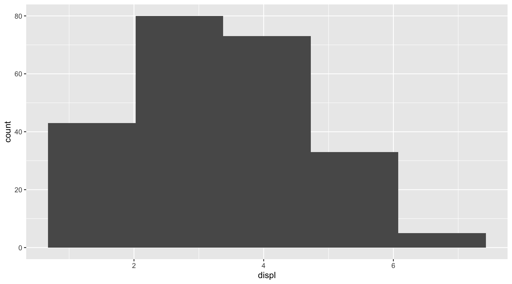
Facets; Data Visualization Process; Geometric Objects
ggplot(data = mpg) +
geom_histogram(mapping =
aes(x = displ),
bins = 5)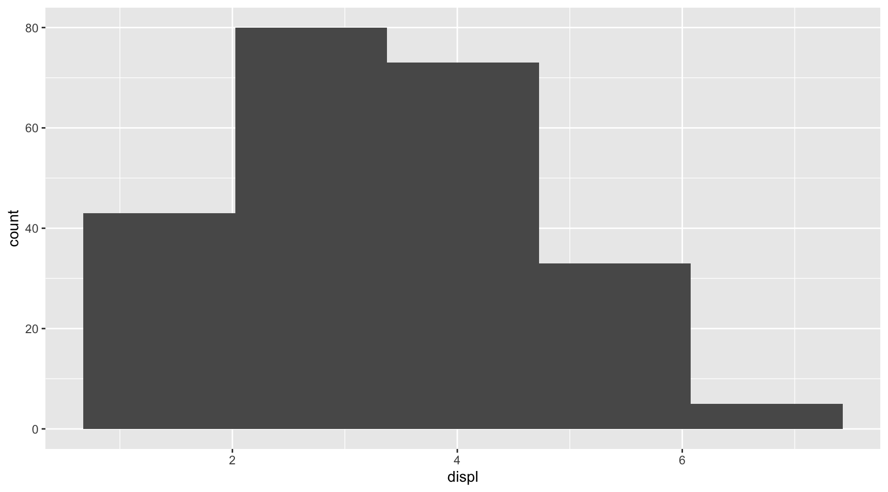
ggplot(data = mpg) +
geom_histogram(mapping =
aes(x = displ),
binwidth = 1)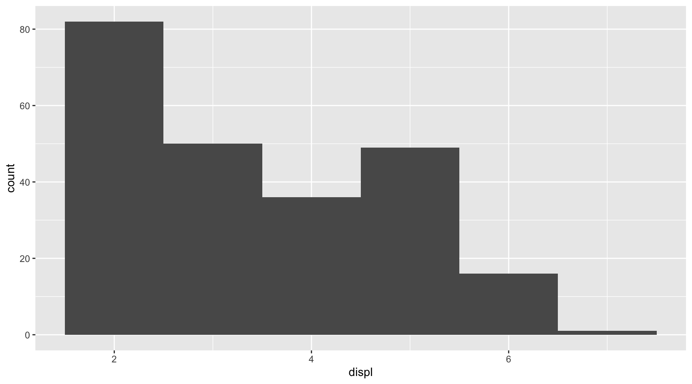
path <-
"https://bcdanl.github.io/data/NVDA.csv"
nvda <- read_csv(path)
ggplot(data = nvda) +
geom_line(mapping =
aes(x = Date,
y = Close)) +
geom_point(mapping =
aes(x = Date,
y = Close),
size = .5) +
geom_smooth(mapping =
aes(x = Date,
y = Close))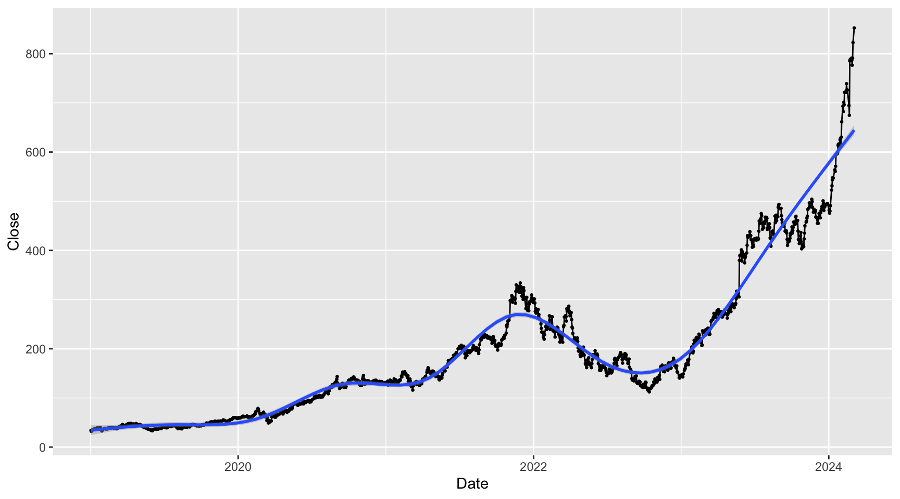
ggplot(data = mpg ) +
geom_point(mapping = aes(x = displ,
y = hwy,
linetype = drv),
alpha = .5) +
geom_smooth(mapping = aes(x = displ,
y = hwy,
linetype = drv))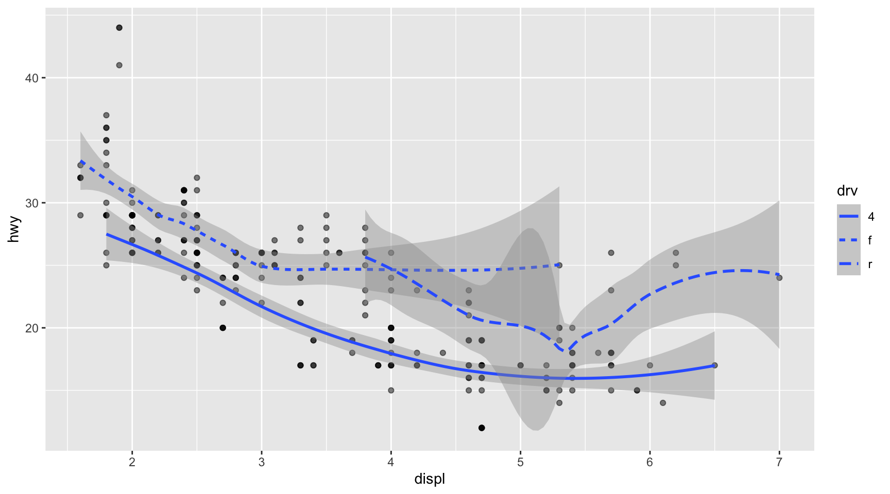
ggplot(data = mpg) +
geom_smooth(mapping = aes(x = displ, y = hwy,
color = drv),
)
ggplot(data = mpg) +
geom_point(mapping =
aes(x = displ,
y = hwy),
alpha = .3) +
geom_smooth(mapping =
aes(x = displ,
y = hwy)) +
geom_smooth(mapping =
aes(x = displ,
y = hwy),
method = lm,
color = 'red')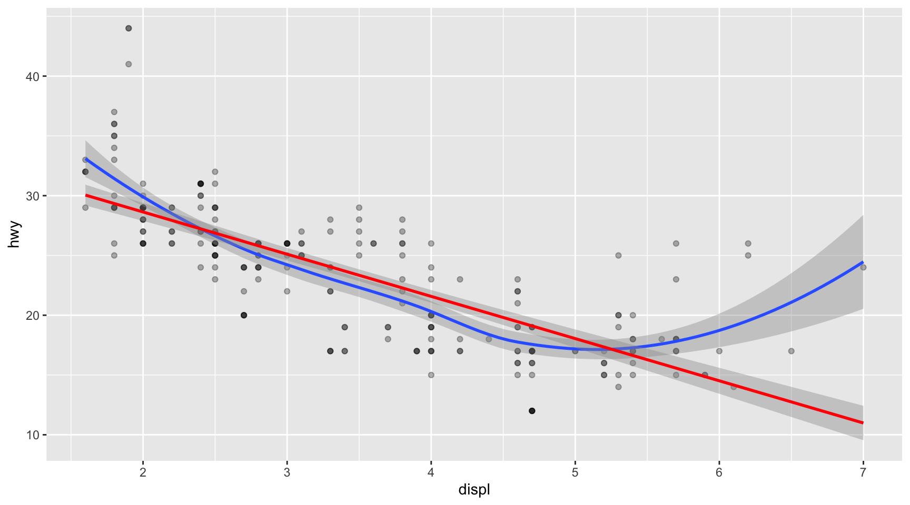
ggplot(data = mpg,
mapping =
aes(x = displ,
y = hwy)) +
geom_point(alpha = .3) +
geom_smooth() +
geom_smooth(method = lm,
color = 'red')ggplot(data = mpg,
mapping =
aes(x = displ,
y = hwy)) +
geom_point(alpha = .5, mapping = aes(color = class)
) +
geom_smooth() +
geom_smooth(method = lm,
color = 'red')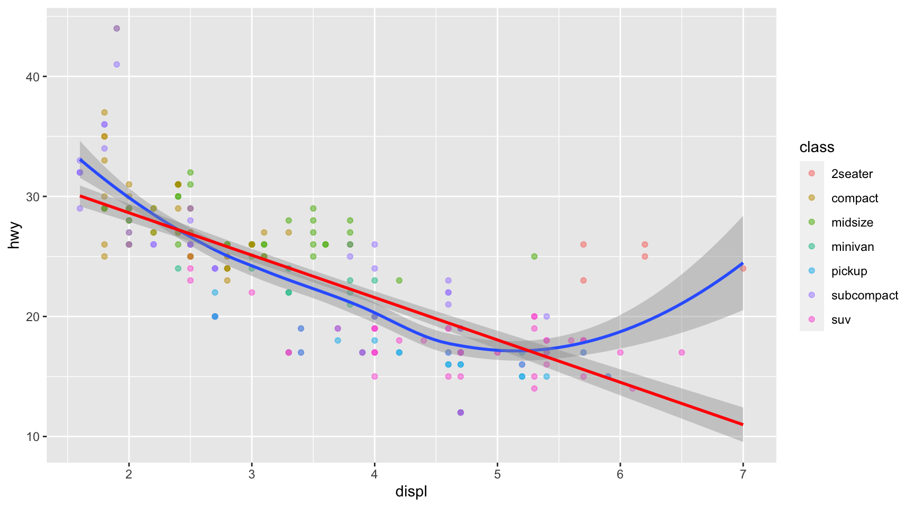
mpg <- ggplot2::mpgclass_vec <- mpg$class
class_vec [1] "compact" "compact" "compact" "compact" "compact"
[6] "compact" "compact" "compact" "compact" "compact"
[11] "compact" "compact" "compact" "compact" "compact"
[16] "midsize" "midsize" "midsize" "suv" "suv"
[21] "suv" "suv" "suv" "2seater" "2seater"
[26] "2seater" "2seater" "2seater" "suv" "suv"
[31] "suv" "suv" "midsize" "midsize" "midsize"
[36] "midsize" "midsize" "minivan" "minivan" "minivan"
[41] "minivan" "minivan" "minivan" "minivan" "minivan"
[46] "minivan" "minivan" "minivan" "pickup" "pickup"
[51] "pickup" "pickup" "pickup" "pickup" "pickup"
[56] "pickup" "pickup" "suv" "suv" "suv"
[61] "suv" "suv" "suv" "suv" "pickup"
[66] "pickup" "pickup" "pickup" "pickup" "pickup"
[71] "pickup" "pickup" "pickup" "pickup" "suv"
[76] "suv" "suv" "suv" "suv" "suv"
[81] "suv" "suv" "suv" "pickup" "pickup"
[86] "pickup" "pickup" "pickup" "pickup" "pickup"
[91] "subcompact" "subcompact" "subcompact" "subcompact" "subcompact"
[96] "subcompact" "subcompact" "subcompact" "subcompact" "subcompact"
[101] "subcompact" "subcompact" "subcompact" "subcompact" "subcompact"
[106] "subcompact" "subcompact" "subcompact" "midsize" "midsize"
[111] "midsize" "midsize" "midsize" "midsize" "midsize"
[116] "subcompact" "subcompact" "subcompact" "subcompact" "subcompact"
[121] "subcompact" "subcompact" "suv" "suv" "suv"
[126] "suv" "suv" "suv" "suv" "suv"
[131] "suv" "suv" "suv" "suv" "suv"
[136] "suv" "suv" "suv" "suv" "suv"
[141] "suv" "compact" "compact" "midsize" "midsize"
[146] "midsize" "midsize" "midsize" "midsize" "midsize"
[151] "suv" "suv" "suv" "suv" "midsize"
[156] "midsize" "midsize" "midsize" "midsize" "suv"
[161] "suv" "suv" "suv" "suv" "suv"
[166] "subcompact" "subcompact" "subcompact" "subcompact" "compact"
[171] "compact" "compact" "compact" "suv" "suv"
[176] "suv" "suv" "suv" "suv" "midsize"
[181] "midsize" "midsize" "midsize" "midsize" "midsize"
[186] "midsize" "compact" "compact" "compact" "compact"
[191] "compact" "compact" "compact" "compact" "compact"
[196] "compact" "compact" "compact" "suv" "suv"
[201] "pickup" "pickup" "pickup" "pickup" "pickup"
[206] "pickup" "pickup" "compact" "compact" "compact"
[211] "compact" "compact" "compact" "compact" "compact"
[216] "compact" "compact" "compact" "compact" "compact"
[221] "compact" "subcompact" "subcompact" "subcompact" "subcompact"
[226] "subcompact" "subcompact" "midsize" "midsize" "midsize"
[231] "midsize" "midsize" "midsize" "midsize" class_vec == "subcompact" [1] FALSE FALSE FALSE FALSE FALSE FALSE FALSE FALSE FALSE FALSE FALSE FALSE
[13] FALSE FALSE FALSE FALSE FALSE FALSE FALSE FALSE FALSE FALSE FALSE FALSE
[25] FALSE FALSE FALSE FALSE FALSE FALSE FALSE FALSE FALSE FALSE FALSE FALSE
[37] FALSE FALSE FALSE FALSE FALSE FALSE FALSE FALSE FALSE FALSE FALSE FALSE
[49] FALSE FALSE FALSE FALSE FALSE FALSE FALSE FALSE FALSE FALSE FALSE FALSE
[61] FALSE FALSE FALSE FALSE FALSE FALSE FALSE FALSE FALSE FALSE FALSE FALSE
[73] FALSE FALSE FALSE FALSE FALSE FALSE FALSE FALSE FALSE FALSE FALSE FALSE
[85] FALSE FALSE FALSE FALSE FALSE FALSE TRUE TRUE TRUE TRUE TRUE TRUE
[97] TRUE TRUE TRUE TRUE TRUE TRUE TRUE TRUE TRUE TRUE TRUE TRUE
[109] FALSE FALSE FALSE FALSE FALSE FALSE FALSE TRUE TRUE TRUE TRUE TRUE
[121] TRUE TRUE FALSE FALSE FALSE FALSE FALSE FALSE FALSE FALSE FALSE FALSE
[133] FALSE FALSE FALSE FALSE FALSE FALSE FALSE FALSE FALSE FALSE FALSE FALSE
[145] FALSE FALSE FALSE FALSE FALSE FALSE FALSE FALSE FALSE FALSE FALSE FALSE
[157] FALSE FALSE FALSE FALSE FALSE FALSE FALSE FALSE FALSE TRUE TRUE TRUE
[169] TRUE FALSE FALSE FALSE FALSE FALSE FALSE FALSE FALSE FALSE FALSE FALSE
[181] FALSE FALSE FALSE FALSE FALSE FALSE FALSE FALSE FALSE FALSE FALSE FALSE
[193] FALSE FALSE FALSE FALSE FALSE FALSE FALSE FALSE FALSE FALSE FALSE FALSE
[205] FALSE FALSE FALSE FALSE FALSE FALSE FALSE FALSE FALSE FALSE FALSE FALSE
[217] FALSE FALSE FALSE FALSE FALSE TRUE TRUE TRUE TRUE TRUE TRUE FALSE
[229] FALSE FALSE FALSE FALSE FALSE FALSEdf_subcompact <- filter(mpg,
class == "subcompact")ggplot(data = mpg,
mapping =
aes(x = displ,
y = hwy)) +
geom_point(mapping =
aes(color = class),
alpha = .5) +
geom_smooth(data = df_subcompact,
se = TRUE) # se stands for standard error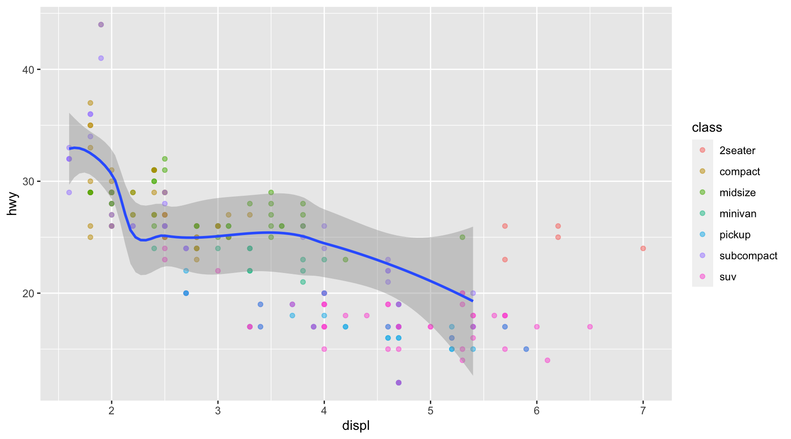
ggplot(data = mpg) +
geom_point(mapping =
aes(x = displ,
y = hwy),
alpha = .3) +
geom_smooth(mapping =
aes(x = displ,
y = hwy)) 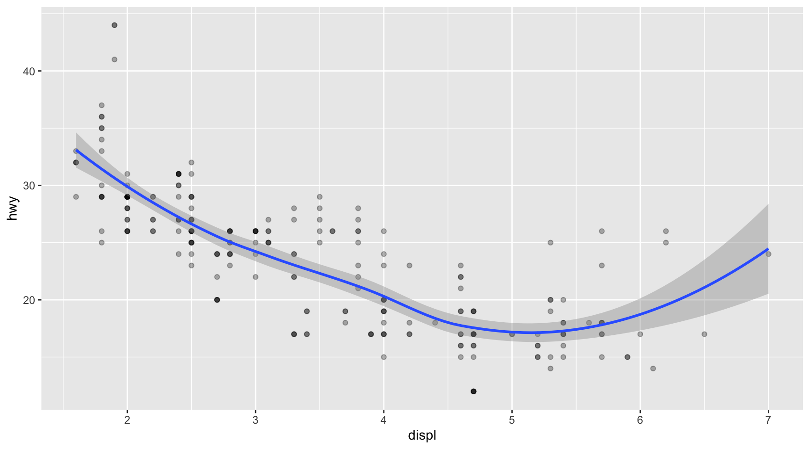
ggplot(data = mpg,
mapping = aes(x = displ, y = hwy,
color = drv)) +
geom_point(alpha = .4) +
geom_smooth(se = FALSE)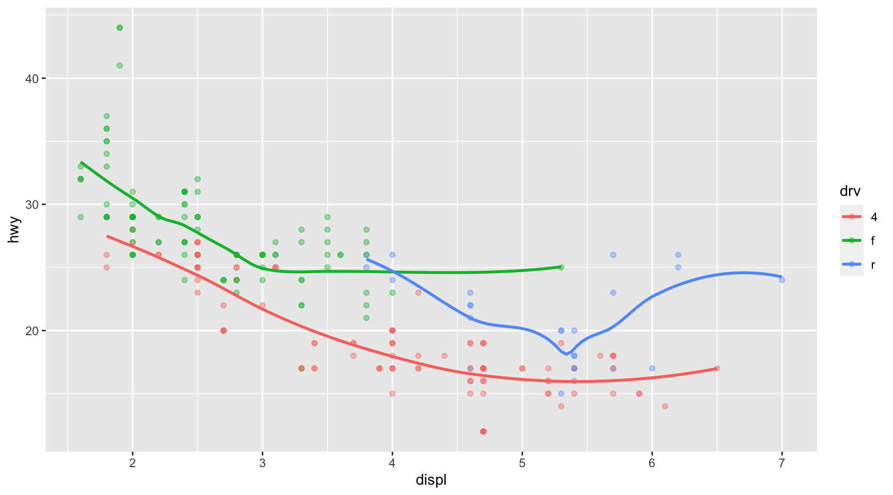
ggplot(data = mpg,
mapping = aes(x = displ, y = hwy)) +
geom_point(alpha = .3) +
geom_smooth(se = F)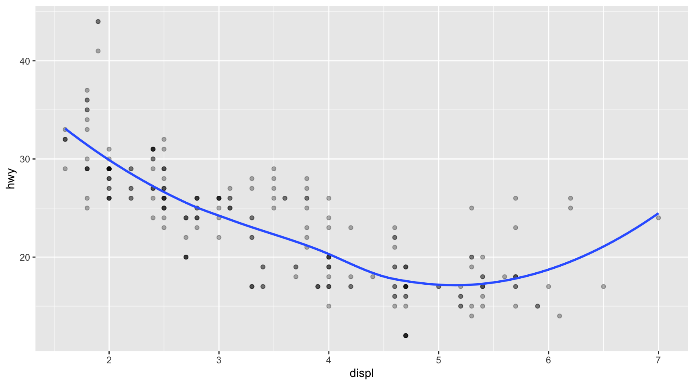
ggplot(data = mpg,
mapping = aes(x = displ, y = hwy)) +
geom_point(alpha = .3) +
geom_smooth(se = F,
mapping = aes(group = drv))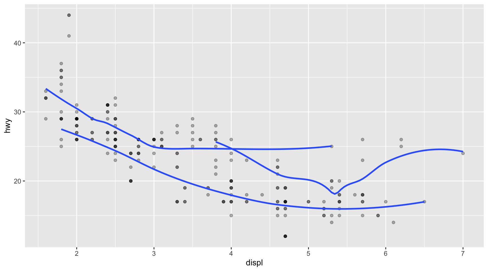
# multiple data.frames